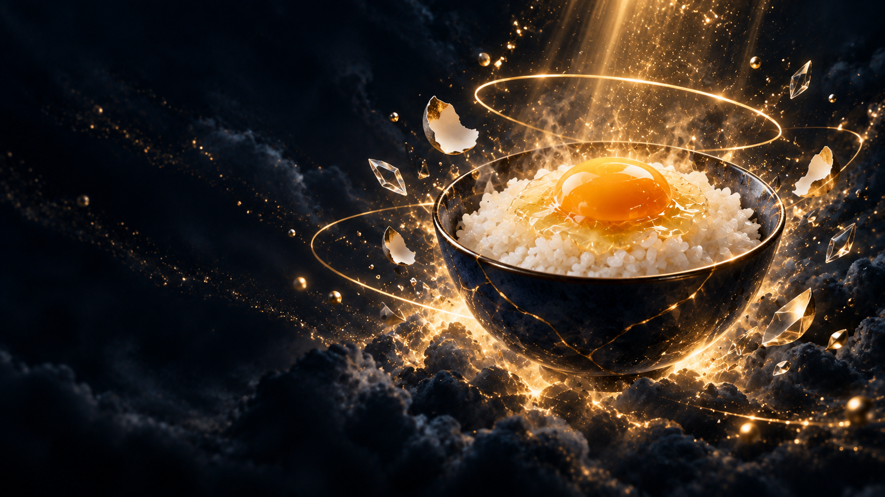

<!doctype html><html lang="ja"><meta charset="utf-8"><meta name="viewport" content="width=device-width,initial-scale=1"><title>TKG ヒーロー7枚</title><style>*{box-sizing:border-box}body{margin:0;background:#0a1530;color:#f7f5ef;font:15px/1.8 sans-serif}header,main{max-width:1440px;margin:auto;padding:28px}h1{font-size:26px;margin:0}button{background:transparent;border:1px solid #5c6577;border-radius:8px;color:inherit;padding:10px 14px;cursor:pointer}button[aria-pressed=true]{background:#f2b632;color:#0f1e3d}nav{display:flex;gap:8px;flex-wrap:wrap;margin:18px 0}.stage{aspect-ratio:16/9;position:relative;overflow:hidden;border-radius:12px}.stage img{width:100%;height:100%;object-fit:cover;position:absolute;inset:0;transition:opacity .7s;opacity:0}.stage img.active{opacity:1}.caption{position:absolute;left:5%;top:24%;max-width:35%;font-size:clamp(16px,3vw,42px);line-height:1.5;font-weight:bold;text-shadow:0 2px 14px #000}.caption small{display:block;font-size:13px;color:#f2b632}section{display:grid;grid-template-columns:repeat(2,minmax(0,1fr));gap:24px}figure{margin:0}figure img{width:100%;display:block;border-radius:8px}figcaption{padding:8px 0;font-size:13px}a{color:#f2b632}@media(max-width:700px){section{grid-template-columns:1fr}header,main{padding:16px}.caption{font-size:18px;max-width:42%}}@media(prefers-reduced-motion:reduce){.stage img{transition:none}}</style><header><h1>TKG / 殻を破り、新しい可能性へ</h1><p>ヒーロー画像7点。ボタンで切り替えて質感の連続性を確認できます。見出しは確認用HTMLで、画像には含まれません。</p><nav><button type="button" data-index="0" aria-pressed="true">トップ：新しい可能性</button><button type="button" data-index="1" aria-pressed="false">会社概要：つながりと歩み</button><button type="button" data-index="2" aria-pressed="false">事業内容：混乱から解決へ</button><button type="button" data-index="3" aria-pressed="false">実績：成果の芽</button><button type="button" data-index="4" aria-pressed="false">お知らせ：更新と発信</button><button type="button" data-index="5" aria-pressed="false">お問い合わせ：天界の卵かけご飯</button><button type="button" data-index="6" aria-pressed="false">FAQ：やさしい対話</button></nav><div class="stage"><div class="caption"><small>TKG / HERO PREVIEW</small>その「困った」、<br>ひとりで抱えない。</div></div></header><main><section><figure><a href="hero-index.png"></a><figcaption>トップ：新しい可能性 / hero-index.png / 1672×941</figcaption></figure><figure><a href="hero-about.png"></a><figcaption>会社概要：つながりと歩み / hero-about.png / 1672×941</figcaption></figure><figure><a href="hero-services.png"></a><figcaption>事業内容：混乱から解決へ / hero-services.png / 1672×940</figcaption></figure><figure><a href="hero-works.png"></a><figcaption>実績：成果の芽 / hero-works.png / 1672×941</figcaption></figure><figure><a href="hero-blog.png"></a><figcaption>お知らせ：更新と発信 / hero-blog.png / 1672×941</figcaption></figure><figure><a href="hero-contact.png"></a><figcaption>お問い合わせ：天界の卵かけご飯 / hero-contact.png / 1672×941</figcaption></figure><figure><a href="hero-faq.png"></a><figcaption>FAQ：やさしい対話 / hero-faq.png / 1672×940</figcaption></figure></section><p><a href="HERO-HANDOFF.md">実装担当向けメモ</a> / <a href="HERO-PROMPTS.md">生成プロンプト</a></p></main><script>const buttons=[...document.querySelectorAll('button')],images=[...document.querySelectorAll('.stage img')];buttons.forEach((b,i)=>b.addEventListener('click',async()=>{await images[i].decode();images.forEach((im,j)=>im.classList.toggle('active',i===j));buttons.forEach((bt,j)=>bt.setAttribute('aria-pressed',String(i===j)));}));</script></html>